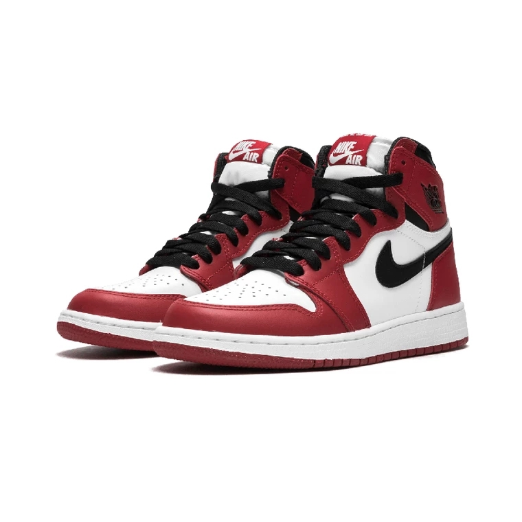
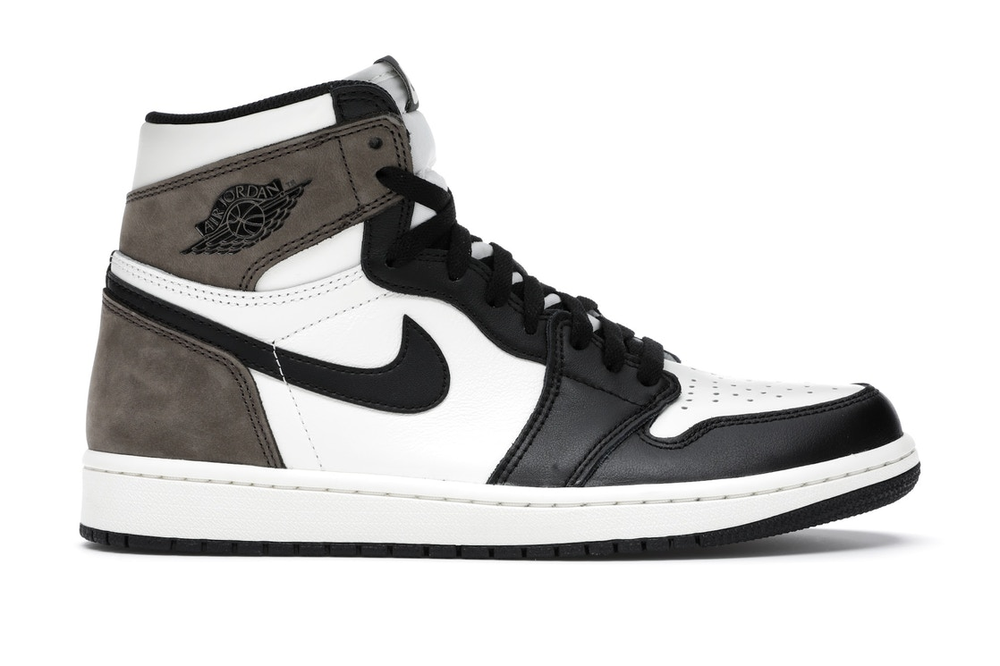
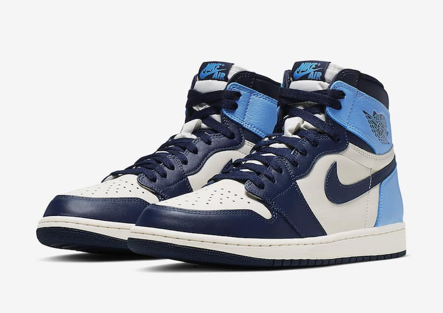
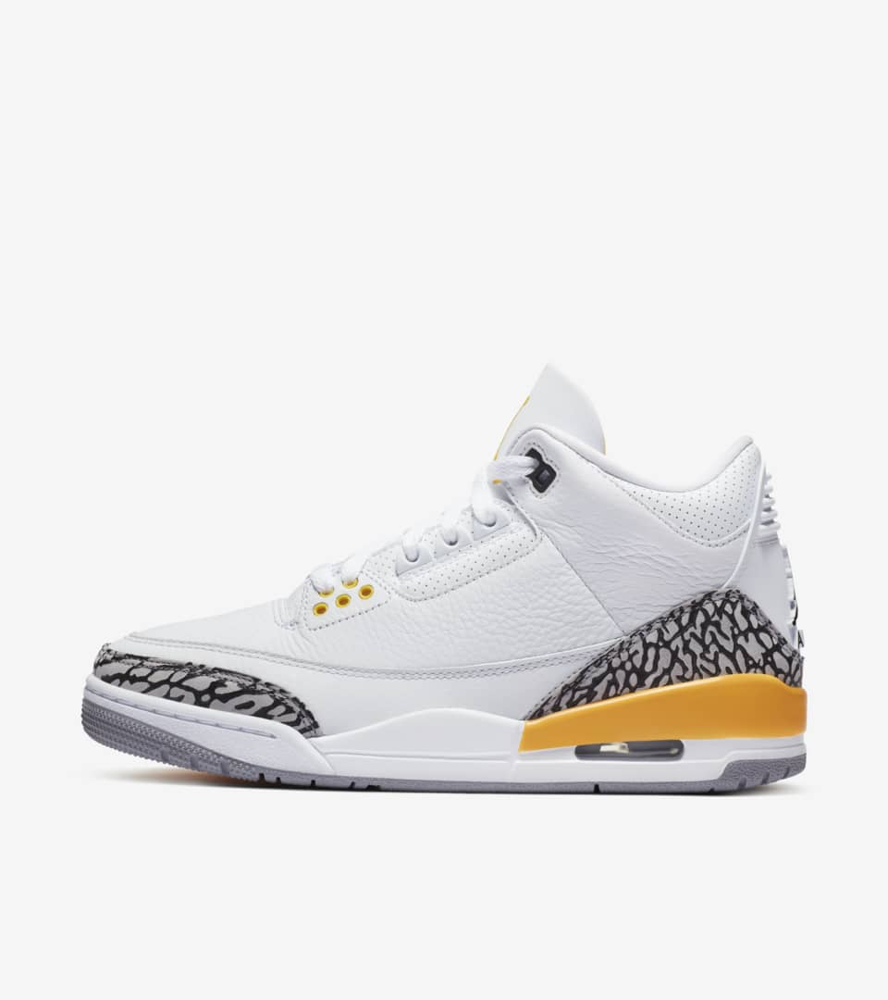
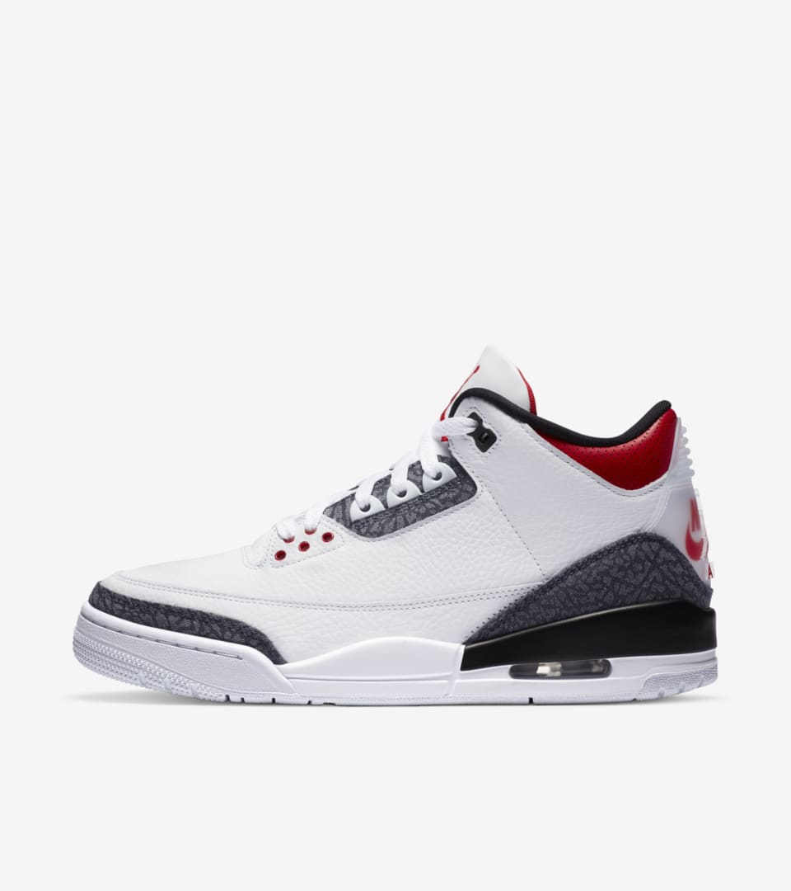
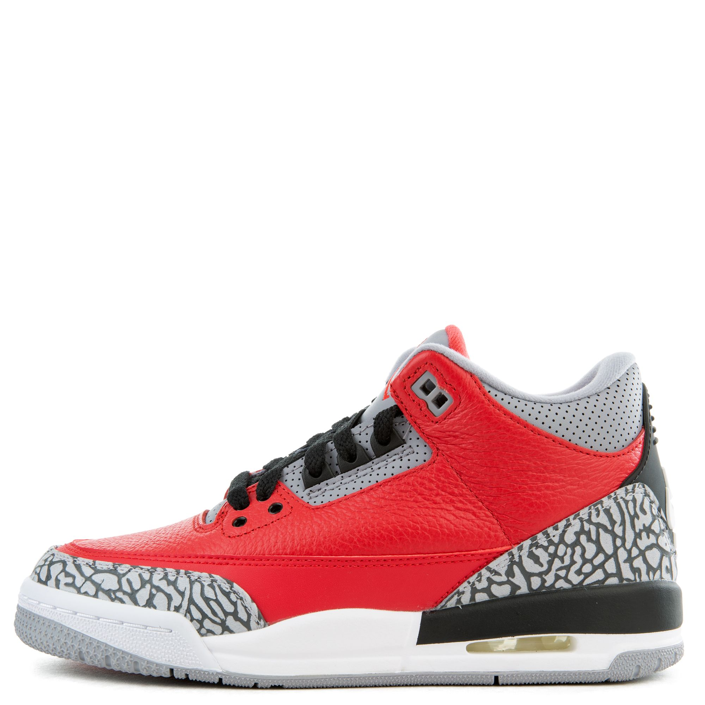
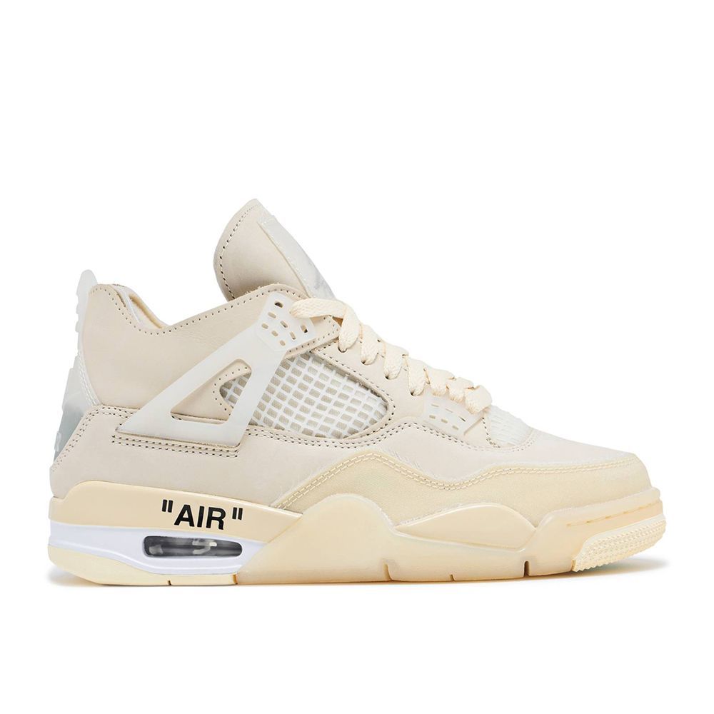
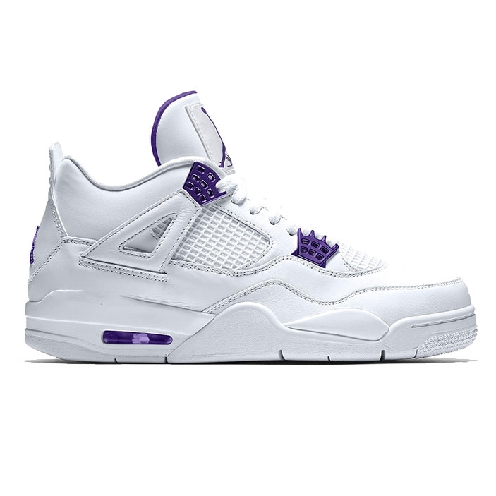
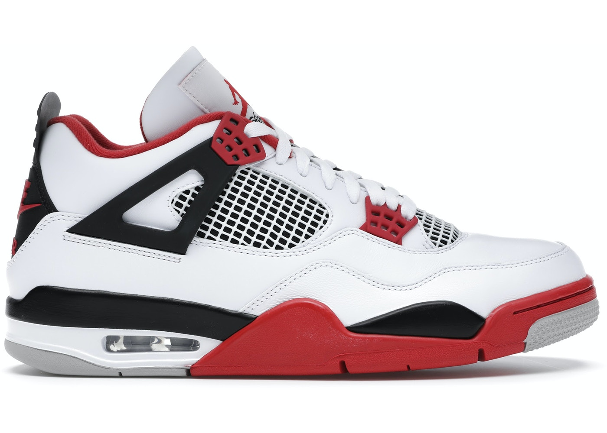

Michael Jeffrey Jordan nascido em Nova Iorque no dia 17 de fevereiro de 1963, é um ex-jogador norte-americano de basquete profissional, atualmente dono da equipe da NBA, Charlotte Hornets. É considerado por muitos como o melhor jogador de basquete de todos os tempos e por muitos como um dos mais importantes desportistas masculinos da história.
Jordan estudou na Universidade da Carolina do Norte, onde foi campeão da NCAA em 1982. Entrou na NBA em 1984 ao ser escolhido pelo Chicago Bulls, e logo se tornou uma das estrelas da liga por sua incrível capacidade de pontuar e habilidade nos saltos. Seus pulos, com enterradas pulando da linha do lance-livre, renderam participações marcantes nos concursos de enterradas e os apelidos de Air Jordan e His Airness. Além de tudo, Jordan foi um dos melhores marcadores que o basquete já viu.[4] Venceu seu primeiro título da NBA em 1991, seguidos por mais dois troféus. Antes da temporada 1993–94 iniciar-se, Jordan se aposentou do basquete para jogar beisebol, mas rapidamente voltou às quadras em 1995 e liderou o Chicago Bulls a mais 3 títulos consecutivos entre 1996 e 1998. Em 1999 anunciou outra aposentadoria, assumindo um posto entre os dirigentes do Washington Wizards. Eventualmente Jordan decidiu voltar a jogar pelo Wizards em 2001, ficando nas quadras até 2003.
Ainda que hoje em dia esta curiosidade continua a ser deixar muita gente surpresa, a verdade é que, inicialmente, Michael Jordan não queria assinar contrato com a Nike. Na verdade, Jordan preferia a adidas. Ou até converse, uma vez que eram as únicas sapatilhas que calçava quando era estudante. As Nike não o convenciam muito, tendo mesmo criticado as sapatilhas da marca norte-americana, dizendo que pareciam ser «sapatilhas do diabo». Também não lhe agradava o volume da entressola, demasiado alta para ele. No entanto, este comentário acabou por ser importante, uma vez que chegou aos ouvidos da Nike. Acabou por ser o designer Peter Moor a decidir reduzir o tamanho da entressola, marcando um novo caminho no calçado da Nike. Air Jordan 1 vermelhasAir Jordan 1 azuis Como podem imaginar, a Nike acabou mesmo por convencer Michael Jordan a criar uma linha de sapatilhas própria. As Nike Air Jordan 1 foram colocadas à venda, de forma oficial, em 1985, e seriam as primeiras de muitas. Chegaram com um desenho high top muito próprio do calçado de basquetebol, isto é, com um cano alto que cobria o tornozelo. Também se destacava o Swoosh na lateral, e o primeiro dos logos da Air Jordan, composto por uma bolsa de basket com asas. Não seria até 1987 quando a Nike viria a apresentar o famoso logo Jumpman, que consistia na silhueta de Michael Jordan a saltar pelo ar, prestes a encestar mais uma bola. É por isso, portanto, que a linha retro das Air Jordan 1 não vem adornada com este logo, uma vez que o mesmo apareceu anos depois.
Graças à boa recepção, continuaram a lançar um novo modelo a cada época, com ideia de ir renovando o calçado desportivo de Michael Jordan.
JORDAN 1 |
||
|---|---|---|
|  |  |  |
JORDAN 3 |
||
|  |  |  |
JORDAN 4 |
||
|  |  |  |